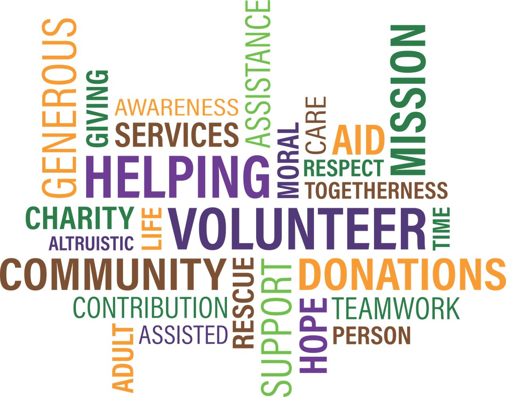

Pamiętam, że już od najmłodszych lat interesowałem się sportem. W podstawówce byłem koszykarzem, a później w gimnazjum zostałem siatkarzem.
Każdy młodych chłopak musi mieć jakieś zajęcie, które pozwoli mu rozładować narastające emocje w środku. Poza sportem już w wieku 6 lat mój tato
postawił mi komputer w pokoju i przeważnie tak jak każdy informatyk, zaczynałem od grania w gry komputerowe. Co prawda dzisiaj już nie mam na to czasu,
ale pamiętam, że wtedy miałem swój świat, do którego nikt nie miał dostępu.

Z czasem gry zaczęły mnie nudzi i zacząłem wychodzić z domu. Przez moich zajomych trafiłem do Wolontariusz-owni w mieście, w którym mieszkałem zanim się wyprowadziłem
do Poznania - Gniewkowie. Przygoda z wolontariatem trwała aż do końca technikum. Dzięki niemu poznałem wielu wspaniałych ludzi, przeżyłem niesamowite chwile, nauczyłem
się wielu przydatnych rzeczy, chociażby jedną z takich skrajności jest konferansjerka. Prowadziłem w swoim życiu kilka koncertów i licytacje. Dzięki temu nie boję
się teraz wyjść do ludzi i przemawiać. Tam właśnie będąc jeszcze w gimnazjum miałem okazję napisać pierwszą stronę opartą na silniku WordPress dla Wolontariusz-owni
i to pisanie stron powoli gdzieś tam się we mnie rodziło. Niestety strona Wolontariusz-owni już nie istnieje tak jak sama organizacja i przyszedł czas, żeby szukać
nowych wyzwań w mowym mieście - Inowrocławiu.
Przygodę z muzyką tak na poważnie zacząłem właśnie tam. Grałem w kilku zespołach, w szkole, w domach kultury i w kościołach. Poza tym angażowałem się w wiele akcji
charytatywnych m. in. Góra Grosza, Mam Haka na Raka, czy zbiórki pieniędzy i żywności organizowane przez Polski Czerwony Krzyż. Pod koniec technikum spróbowałem
sam swoich sił w koordynowaniu projektem i razem z moimi przyjaciółmi stworzyliśmy Kuźnię Młodych, gdzie za darmo udzielaliśmy korepetycji z matematyki, j. angielskiego,
czy też dawaliśmy lekcje gry na gitarze. Niestety przeprowadzka spowodowała, że musieliśmy odłożyć ten projekty na później. Mam nadzieję, że przyjdzie jeszcze taki czas
, który pozwoli mi przywrócić ten projekt do życia.
Z tych wszystkich lat to czym nadal się zajmuję po pracy to granie na gitarze i komponowanie z zaciszu domowym, pisanie stron internetowych i
czytanie książek o tematyce rozwojowej, marketingowej i strikte związanej z informatyką i muzyką.